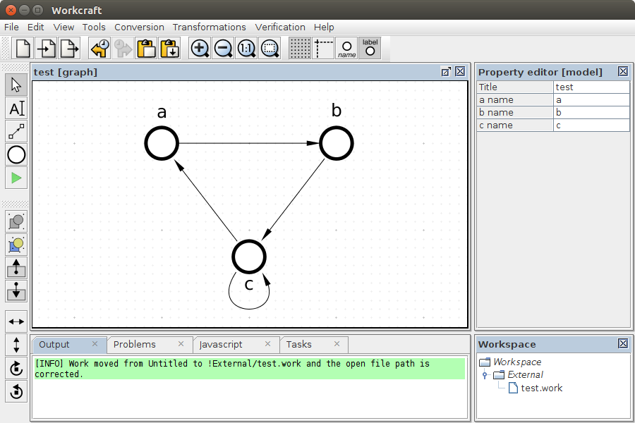
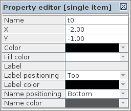
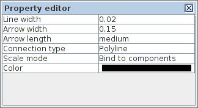

The best margins for printout:
- top = 14mm
- bottom = 14mm
- left = 20mm
- right = 20mm
A typical layout of Workcraft main window is as follows.

Editor panel occupies the central area of the window. Here the models are displayed for editing and analysis. The following shortcuts are used to navigate the model view:
- Use left mouse button or ←, ↑, →, ↓ to move selected elements of the graph model.
- Scroll the mouse wheel forward to zooms in and backward to zoom out. Alternatively press + to zoom in and − to zoom out.
- Use the middle mouse button or Ctrl+right mouse button or Ctrl+←, ↑, →, ↓ to pan the view.
Main menu groups all the actions available for the current graph model; many of them are accessible via keyboard shortcuts. Global tools toolbar at the top edge accumulates frequently used actions.
Property editor is located at the right side of the window and is used for displaying and modifying the properties of the selected graph elements.
Model tools and Tool controls toolbars are located on the left side. Some tools require more spacious panel to display additional information – such Tool controls panel appears as at the right side, instead (or in addition to) the Property editor.
The bottom panel is reserved for the following tabs:
- Output - this is to provide information on the currently executed task.
- Problems - this is to report errors and exceptions.
- Tasks - here the progress of the currently run tasks can be monitored.
- Javascript - this is console for scripting bulk actions in Javascript language (for experienced users only).
The layout of panels and tabs can be re-arranged - just drag-and-drop any panel in a new location, remove it from the layout or add it to again via View→Windows menu. The default layout can be restored via View→Reset UI layout menu item.
Model tools
This panel provide access to frequently used tools for capturing, modification and simulation of the graph models.

Some of the tools are implemented in the core of Workcraft and are available in all the plugins. These include selection, connection and text note tools.
![[S] Select](editor_tools-select.png "[S] Select") - selection tool for editing, moving, deleting, and grouping the model elements (can also be activated by pressing S). When this tool active you can select the graph elements and modify them as follows.
- selection tool for editing, moving, deleting, and grouping the model elements (can also be activated by pressing S). When this tool active you can select the graph elements and modify them as follows.
- Click a graph element to select it. Outline a rectangular area to select several elements. Outline from-right-to-left for adding fully covered elements and from-left-to-right for adding any touched elements.
- Hold Shift to include elements into selection and Ctrl to exclude elements from selection.
- Selected components can be removed by pressing Delete, cut by pressing Ctrl+X combination of keys, copied by pressing Ctrl+C keys, and a previously copied part of a model can be inserted by pressing Ctrl+V keys. These actions are also available in the Edit menu.
- Double click inside a group to enter it (same action as Page↑). Double-click outside the current group to go one level up (same action as Page↓).
- Use left mouse button or ←, ↑, →, ↓ to move selected components.
![[N] Text Note](editor_tools-text_note.png "[N] Text Note") - text note generator for creating textual comments (can also be activated by pressing N).
- text note generator for creating textual comments (can also be activated by pressing N).
![[C] Connect](editor_tools-connect.png "[C] Connect") - connection tool for connecting the model nodes with arcs (can also be activated by pressing C). When the connection tool is active, click on the source node to initiate a connection, then click on the destination node to complete the connection. You can hold Ctrl key to connect nodes in continues mode, so that each destination node becomes a source node for the next connection.
- connection tool for connecting the model nodes with arcs (can also be activated by pressing C). When the connection tool is active, click on the source node to initiate a connection, then click on the destination node to complete the connection. You can hold Ctrl key to connect nodes in continues mode, so that each destination node becomes a source node for the next connection.
Most of the tools are model-specific and are implemented by the corresponding plugin. For example, the Directed Graph plugin implements a basic vertex generator tool while the Petri net plugin implements place generator, transition generator and simulation tools.
![[P] Place](editor_tools-place.png "[P] Place") - create Petri net places (can also be activated by pressing P).
- create Petri net places (can also be activated by pressing P).
![[T] Transition](editor_tools-transition.png "[T] Transition") - create Petri net transitions (can also be activated by pressing T).
- create Petri net transitions (can also be activated by pressing T).
![[M] Simulate](editor_tools-simulate.png "[M] Simulate") - activate simulation of the model (can also be activated by pressing M).
- activate simulation of the model (can also be activated by pressing M).
Tool Controls
This panel provides access to the extended functionality (if present) of a selected tool. Of the generic tools only the Selection tool and Simulation tool have such extended functionality.
Selection controls
The selection tool controls provide means to transform the selected nodes and connections of the model.

") - combine the selected elements into a group (or press Ctrl+G).
- combine the selected elements into a group (or press Ctrl+G).
") - combine the selected elements into a page (or press Alt+G).
- combine the selected elements into a page (or press Alt+G).
") - decomposes the selected group into the comprising elements (or press Ctrl+Shift+G). .
- decomposes the selected group into the comprising elements (or press Ctrl+Shift+G). .
") - level up action: if the focus is currently inside a group, then pressing this button shifts the focus to the container group or the root of the model. The same can be done by pressing Page↑ or double-clicking outside the group boundaries.
- level up action: if the focus is currently inside a group, then pressing this button shifts the focus to the container group or the root of the model. The same can be done by pressing Page↑ or double-clicking outside the group boundaries.
") - level down action: if a single group is selected, then pressing this button enters this group. The same can be done by pressing Page↓ or double-clicking inside the group boundaries.
- level down action: if a single group is selected, then pressing this button enters this group. The same can be done by pressing Page↓ or double-clicking inside the group boundaries.
") - flip selected elements horizontally (or press Ctrl+F).
- flip selected elements horizontally (or press Ctrl+F).
") - flip selected elements vertically (or press Ctrl+Shift+F).
- flip selected elements vertically (or press Ctrl+Shift+F).
") - rotate selected elements clockwise (or press Ctrl+R).
- rotate selected elements clockwise (or press Ctrl+R).
") - rotate selected elements counterclockwise (or press Ctrl+Shift+R).
- rotate selected elements counterclockwise (or press Ctrl+Shift+R).
Note the difference between groups and pages. Groups are just unnamed decorations for several nodes, while pages are named nodes containing other nodes.
Simulation controls
The simulation tool controls provides the means to analyse and navigate the simulation data. There are two sources of simulation data:
- Trace - the base sequence of events, often from an external tool, e.g. a trace leading to a deadlock.
- Branch - the deviated sequence of events executed by explicitly clicking the excited nodes of the model.
Usually the event names correspond to the model nodes whose execution changed the state of the model. The sequences of events are recorded in the corresponding columns of the Trace–Branch table. You can click the name of the event in either column to restore the model state just before that event has happened.

The navigation through the simulation data can be done with the following buttons:
 - execute the trace and branch events starting from the current position.
- execute the trace and branch events starting from the current position.
 - stop the execution and reset the trace and branch data.
- stop the execution and reset the trace and branch data.
- - undo the last event that lead to the current state.
 - execute the next event in the trace or branch.
- execute the next event in the trace or branch.
- - randomly execute events from a pool of events that are enabled in the current state.
 - copy the trace, the branch and the current simulation state into the clipboard.
- copy the trace, the branch and the current simulation state into the clipboard.
 - paste the trace, the branch and the current simulation state from the clipboard.
- paste the trace, the branch and the current simulation state from the clipboard.
 - save the current state of the model as its initial state.
- save the current state of the model as its initial state.
The slide bar under the navigation buttons controls the speed of playback for the existing or randomly generated sequence of events.
Note that Signal Transition Graph and Digital Circuit plugins extend the simulation controls with the signal state table. The first column of the table lists all the signals of the STG while the second column captures the current state of each signal - 0, 1 or ? if the state undefined. The state of excited signals (whose transition is currently enabled) is emphasised by bold font (1, 0, or ?).
Property editor
The Property editor panel enables displaying and modifying the attributes of a model and its elements. It has four distinctive modes of operation:
- Element properties. When a single element is selected its properties are displayed and are available for editing. This mode is denoted by [single element] line in the property editor title.
- Combined properties. When a group of elements is selected a “combined” list of their properties is displayed. Those properties which have the same name and class are combined under one editor item and its modification will propagate too all selected components of relevant class. If the initial value of the combined property cannot be agreed between the selected components an empty grey box is shown. This mode is denoted by [N selected elements] line in the property editor title, where N is the number of selected elements whose combined properties are displayed.
- Model properties. When no elements is selected the model-specific properties are displayed. This can be seen in the Policy Net plugin where a list of bundles is shown with a possibility to edit their names, colours and the list of bundled transitions. This mode is denoted by [model] line in the property editor title.
- Template properties. When a node generator or connection tool is activated, their template properties are displayed and can be modified. All all subsequently created nodes or connections inherent these template properties. To reset the template properties for a particular tool to their default settings just double-activate the tool (i.e. activate the tool while it is already selected). This mode is denoted by [template] line in the property editor title.
The base list of properties depends on the element type but may be extended by the plugins implementing a particular interpreted graph model. The elements available in all the models are nodes, connections, groups and text notes. For example, here is a typical list of properties for graph nodes and connections.
Node properties

- X and Y - coordinates of the node relative to its container (a group or a root of the model)
- Foreground color - color of the node borders
- Fill color - color of the node background
- Label - text of the node label
- Label positioning - location of the label text relative to the node
- Label color - color of the label text
- Name positioning - location of the unique ID relative to the node
- Name color - color of the unique ID text
Note 1: There is a difference between the label and name of a node. The name is a unique ID of a node, often automatically generated by the tool and used for cross-referencing the model elements. The label is an arbitrary textual note associated with the node.
Note 2: The available positioning of node label and name are top, bottom, left, right, center, top-left, top-right, bottom-left, bottom-right.
Connection properties

- Line width - weight of the connection line
- Arrow width - width of the arrow head
- Arrow length - length of the connection arrow (none, small medium, large)
- Connection type - type of connection line (Polyline or Bezier curve)
- Scale mode - the way of scaling connection line when its adjacent nodes are moved (lock anchors, bind to components, proportional, stretched, adaptive)
- Color - color of the connection curve
Tips and Tricks
Navigation
- Scroll the mouse wheel forward to zooms in and backward to zoom out. Alternatively press + to zoom in and − to zoom out. Press Ctrl+0 to restore the default scale.
- Press Ctrl+F to fit the selection into the screen or Ctrl+T to centre it.
- Use the middle mouse button or Ctrl+right mouse button or Ctrl+←, ↑, →, ↓ to pan the view.
Selection
- Hold Shift to include objects into a selection and Ctrl to exclude objects from a selection.
- Holds Alt (or AltGr) to highlight/select adjacent connections.
- Outline a selection rectangle from-left-to-right for adding objects that are inside the selection region, and from-right-to-left for adding objects touched by the selection region.
- Press Crtl+A to select everything or Ctrl+I to inverse the selection.
- Use left mouse button or ←, ↑, →, ↓ to move selected components.
- Press Delete to remove selected components.
- Press Ctrl+A to select all objects or Esc to reset selection.
Connection
- A polyline connection can be created by generating anchor points (click outside of existing nodes) before clicking the final node.
- Anchor points can be added to a connection by double-clicking a desired location on the connection line while the Selection tool is active.
- Hold Ctrl to connect continuously – the final node or a previous connection becomes the starting node for the next connection.
- Hold Shift to create a replica node for a connection (only works for cirtain types of nodes, e.g. places of Petri nets and Signal Transition Graphs).
Clipboard and History
- Clipboard operations are allowed between the models of the same type: Ctrl+C to copy, Ctrl+X to cut and Ctrl+V to insert.
- History of modifications can be browsed: Ctrl+Z to undo and Ctrl+Shift+Z to redo.
Grouping
- Ctrl+G combines selected objects into a group and Ctrl+Shift+G splits selected groups into individual objects.
- Press Page↓ or double-click a group to enter it. Press Page↑ or double-click outside a group to leave it.
Simulation
- Use [ and ] keys to navigate through the simulation trace.
- In Signal-State table the values of excited signals are depicted in bold font.